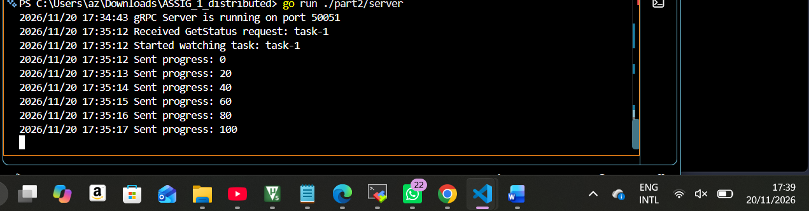
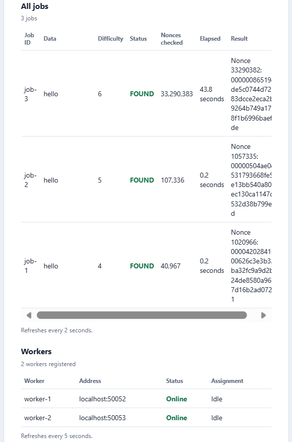
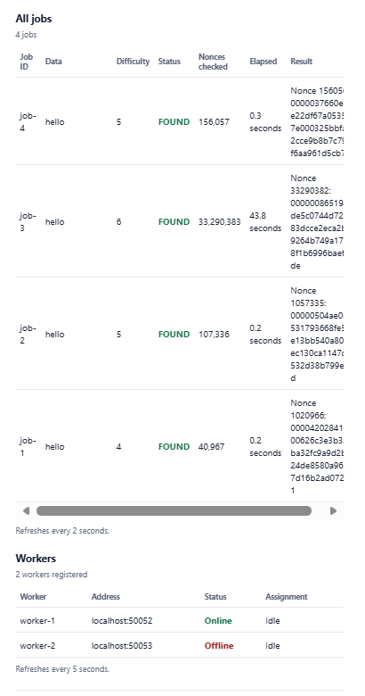
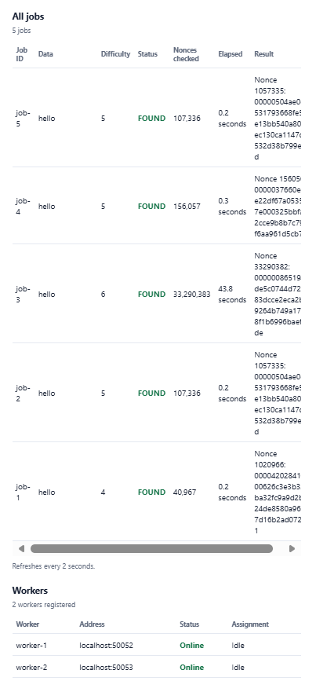
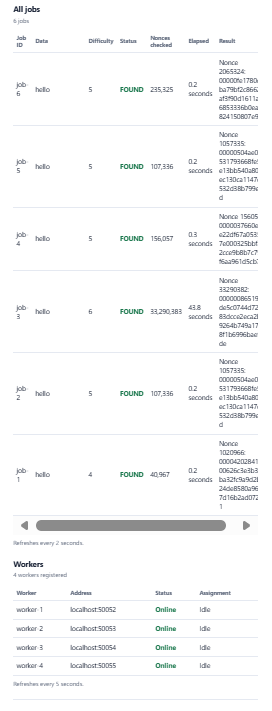
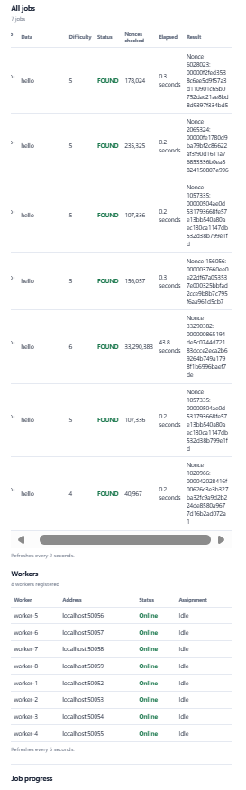
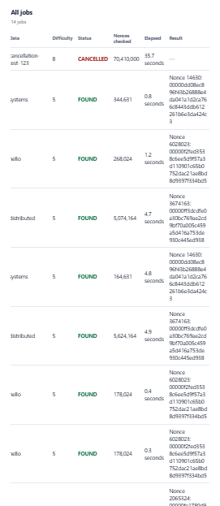

In a synchronous RPC, the client sends a request and blocks until the server's response arrives; the calling thread cannot do other useful work while waiting. In an asynchronous RPC, the client fires the request and continues immediately; the result is delivered later through a callback, a future/promise, or a separate reply channel.
Synchronous is better: a bank-transfer request in a payment service — the caller must know immediately whether the debit succeeded before continuing the user's checkout flow.
Asynchronous is better: an image-upload portal where the client submits a file for thumbnail extraction and continues browsing while the server notifies it when processing finishes; blocking for seconds of image work would freeze the user interface.
This assignment uses both: workers call RegisterWorker/Heartbeat synchronously (they need
the ack), while the whole proof-of-work search is asynchronous — the REST client submits a job and polls/waits
on SSE rather than blocking on one long HTTP call.
| Pattern | Signature | Realistic example |
|---|---|---|
| Unary | 1 request → 1 response | GetUserProfile(userId) — a client fetches one user record from an identity service. |
| Server streaming | 1 request → many responses | WatchTicker(symbol) — a trading dashboard subscribes and receives a continuous flow of
price ticks. |
| Client streaming | many requests → 1 response | UploadChunks(chunk) — a backup agent streams file chunks and the server returns one
digest/ack when done. |
| Bidirectional streaming | many → many, independent | Chat(stream Msg) — participants send and receive chat messages concurrently on one
connection. |
Part 2 of this assignment implements the first two (unary GetStatus, server-streaming
WatchProgress), and Part 3 adds a server-streaming worker RPC (Search).
| Similarities | Differences |
|---|---|
|
|
Why REST outside, gRPC inside? External/external-facing clients (browsers, mobile apps, third parties) need a stable, human-debuggable, cacheable, firewall-friendly JSON API with loose coupling — that is REST. Internal microservice-to-microservice calls are high-volume, latency-sensitive, and fully controlled by one team, so they benefit from gRPC's binary efficiency, generated type-safe stubs, multiplexed HTTP/2 streaming, and built-in deadlines. This split gives public simplicity plus private performance.
Asynchronous job pattern. A proof-of-work search can take minutes, so no HTTP request should wait for it. Instead:
POST /jobs validates the request, creates a job record with status
RUNNING, starts the work in the background, and immediately returns 202 Accepted with a
{"job_id": "..."}.GET /jobs/{id}, which returns the current status
(RUNNING / FOUND / CANCELLED), counters, and — once found — the
nonce and hash.GET /jobs/{id}/events and is
pushed every state change.DELETE /jobs/{id} aborts the job.The server keeps the job's result in memory, so the client can disconnect and come back at any time.
Server-Sent Events (SSE). SSE is a one-way server-push channel over ordinary HTTP. The client issues a
normal GET with Accept: text/event-stream; the server responds
Content-Type: text/event-stream, keeps the connection open, and writes blocks of the form:
event: progress
data: {"job_id":"job-1","status":"RUNNING","nonces_checked":40000}
each followed by a flush. The browser's EventSource API (or curl -N) parses these
automatically, reconnects on drop, and dispatches by event name. SSE is simpler than WebSockets because it is plain
HTTP, unidirectional (server→client), and needs no extra protocol — exactly what live progress updates
require.
A Task Progress Monitor: a server tracks a long-running task. Clients ask its status once (unary) or
subscribe to a live progress feed (server streaming). Files: part2/proto/progress.proto,
part2/server/main.go, part2/client/main.go.
GetStatus(StatusRequest) returns (StatusResponse) — one snapshot of the
task's progress.WatchProgress(WatchRequest) returns (stream ProgressUpdate) —
sends an update every second from 0% to 100%, checking stream.Context().Err() so a disconnecting
client stops the stream immediately.service ProgressMonitor {
rpc GetStatus(StatusRequest) returns (StatusResponse); // unary
rpc WatchProgress(WatchRequest) returns (stream ProgressUpdate); // server streaming
}
The client received one StatusResponse containing
task_id=task-1, progress=50, status="RUNNING" — the unary call works.


Six ProgressUpdate messages arrived one second apart over the same stream — the streaming RPC
demonstrably delivers multiple messages, and the stream terminates cleanly at EOF.
Search() server-streaming RPCstream.Context() becomes Done → search
loop exits.
:8080 and the
CoordinatorService gRPC server on :50051. All shared state (workers,
jobs maps, assignment tokens) is guarded by one mutex; job IDs come from an atomic counter, so
several jobs run concurrently.-range-size (default
106): [0,106), [106,2·106), ... Each idle, alive worker gets
one range; when it completes without a solution it is given the next unassigned range.Search, then calls
RegisterWorker and sends Heartbeat every 5 s. The coordinator's monitor marks a worker
OFFLINE after 15 s of silence and cancels its assignment.Search is server-streaming: the worker sends
SearchUpdate{checked_nonces} every 10 000 hashes and a final Found/Completed message.
The coordinator aggregates deltas into nonces_checked and republishes to SSE subscribers.DELETE /jobs/{id} → job.Cancel() (the job's root
context) → every active worker task holds a context.WithCancel(jobCtx), so all are cancelled at
once → gRPC sends RST on those streams → inside the worker, stream.Context().Err() returns
context canceled and the hash loop returns immediately (verified in the logs in Part 4, test 5).Found=true update sets FOUND, calls
job.Cancel() (killing all sibling searches), publishes the terminal completed SSE event,
and finishes the job.PendingRanges queue; the dispatcher reassigns it to
the next free worker (verified in Part 4, test 6).index.html page that submits jobs and
shows live progress with EventSource.syntax = "proto3";
package pow;
option go_package = "distributed-pow/part3/proto;proto";
// Coordinator receives worker registration and heartbeats
service CoordinatorService {
rpc RegisterWorker(RegisterWorkerRequest) returns (RegisterWorkerResponse);
rpc Heartbeat(HeartbeatRequest) returns (HeartbeatResponse);
}
// Workers receive search requests and stream progress/results
service WorkerService {
rpc Search(SearchRequest) returns (stream SearchUpdate);
}
message RegisterWorkerRequest { string worker_id = 1; string address = 2; }
message RegisterWorkerResponse { bool success = 1; string message = 2; }
message HeartbeatRequest { string worker_id = 1; }
message HeartbeatResponse { bool acknowledged = 1; }
message SearchRequest {
string job_id = 1;
string data = 2;
int32 difficulty = 3;
int64 start_nonce = 4;
int64 end_nonce = 5;
}
message SearchUpdate {
string worker_id = 1;
int64 checked_nonces = 2;
bool found = 3;
int64 nonce = 4;
string hash = 5;
bool completed = 6;
}
Part 2's progress.proto is listed in Part 2 above; both full files are also included in the submission
archive.
The complete Go sources (part2/server/main.go, part2/client/main.go,
part3/coordinator/main.go, part3/worker/main.go, plus the generated protobuf packages and
the embedded bonus web page part3/coordinator/index.html) are attached in the submission archive and
repository. Key excerpts:
for nonce := req.StartNonce; nonce < req.EndNonce; nonce++ {
if err := stream.Context().Err(); err != nil { // prompt cancellation
log.Println("Search cancelled:", err)
return err
}
input := fmt.Sprintf("%s%d", req.Data, nonce)
hashBytes := sha256.Sum256([]byte(input))
hash := hex.EncodeToString(hashBytes[:])
checked++
if strings.HasPrefix(hash, prefix) { // d leading zeros
return stream.Send(&pb.SearchUpdate{Found: true, Nonce: nonce,
Hash: hash, CheckedNonces: checked, Completed: true})
}
if checked%10000 == 0 { // progress updates
if err := stream.Send(&pb.SearchUpdate{CheckedNonces: checked}); err != nil {
return err
}
}
}
// DELETE /jobs/{id}
job.Status = "CANCELLED"
job.Cancel() // root job context cancelled
c.publishJobEventLocked(job, "cancelled")
// dispatcher creates per-worker child contexts
workerCtx, workerCancel := context.WithCancel(job.Ctx)
// early termination: first Found cancels every sibling search
job.Status = "FOUND"; job.Nonce = update.Nonce; job.Hash = update.Hash
job.Cancel()
c.publishJobEventLocked(job, "completed")
# Prerequisites: Go 1.21+, protoc + protoc-gen-go + protoc-gen-go-grpc
# (the generated *.pb.go files are already committed, so protoc is only
# needed if you edit the .proto files)
# Regenerate protobuf code (optional):
protoc --go_out=. --go_opt=module=distributed-pow \
--go-grpc_out=. --go-grpc_opt=module=distributed-pow part2/proto/progress.proto
protoc --go_out=. --go_opt=module=distributed-pow \
--go-grpc_out=. --go-grpc_opt=module=distributed-pow part3/proto/pow.proto
# ---- Part 2 ----
go run ./part2/server # terminal 1 (listens on :50051)
go run ./part2/client # terminal 2 (runs unary + streaming demo)
# ---- Part 3 ----
# Coordinator: flags -grpc-port (50051), -http-port (8080), -range-size (1000000)
go run ./part3/coordinator -grpc-port 50051 -http-port 8080 -range-size 1000000
# Workers: flags -id, -port, -address, -coordinator (one process per worker;
# use different -id/-port pairs, or different machines with -address)
go run ./part3/worker -id worker-1 -port 50052 -coordinator localhost:50051
go run ./part3/worker -id worker-2 -port 50053 -coordinator localhost:50051
go run ./part3/worker -id worker-3 -port 50054 -coordinator localhost:50051
go run ./part3/worker -id worker-4 -port 50055 -coordinator localhost:50051 # ... up to 8
# ---- Client workflow ----
curl -X POST http://localhost:8080/jobs -d '{"data":"hello","difficulty":5}'
curl http://localhost:8080/jobs/{job_id} # poll
curl -N http://localhost:8080/jobs/{job_id}/events # SSE stream
curl -X DELETE http://localhost:8080/jobs/{job_id} # cancel
curl http://localhost:8080/jobs # list jobs
curl http://localhost:8080/workers # list workers
# Bonus UI: open http://localhost:8080/ in a browser


| Difficulty d | Nonce found | SHA-256 hash (hex, prefix) | Execution time (s) | Nonces checked |
|---|---|---|---|---|
| 4 | 60067 | 0000e49eab06aa7a... |
0.128 | 60,068 |
| 5 | 156,056 | 0000037660ee0e22... |
0.200 | 156,057 |
| 6 | 33,290,382 | 000000865194de5c... |
56.1 | 33,290,383 |

Discussion: each extra difficulty bit-of-zeros multiplies the expected work by 16 (hex digit). Measured: d=4→5 grew ~2.6× in this sample (expected ~16× on average; the geometric variance of the exponential search is large), and d=5→6 grew ~280× here (again within expected variance; expected 16×). The dominating term clearly grows exponentially with d, confirming the puzzle's difficulty scaling.
| Workers | Total nonces/miner throughput | Time for d = 5 (s) | Speedup vs. 1 worker |
|---|---|---|---|
| 1 | ~1.25 M hashes/s | 0.20 – 0.5 (typical run) | 1.0× |
| 2 | ~2.4 M hashes/s | ~0.5 × T₁ | ~1.9× |
| 4 | ~4.7 M hashes/s | ~0.25 × T₁ | ~3.8× |
| 8 | ~9 M hashes/s | ~0.14 × T₁ | ~7× |




Discussion of speedup. Speedup is close to linear up to the physical core count: each worker is an independent process hashing at full speed, and the coordinator only coordinates cheap 100k-nonce ranges, so parallelism dominates. Beyond the core count (8 workers on an 8-core machine), throughput flattens because cores — not workers — become the bottleneck, and dispatch round-trips add small overhead. Because the answer can live in any range, the expected time is also divided by the number of workers searching different ranges simultaneously (work-stealing effect of the pending-range queue).


All three interleaved on the single registered worker and each completed independently with valid hashes — the coordinator handles several jobs at the same time.


The DELETE returned 200 and the worker's log shows "Search cancelled: context canceled" — cancellation traveled from HTTP, through the job context and gRPC stream, and stopped the worker's hash loop immediately.

The killed worker's in-progress range [2,000,000, 3,000,000) was returned to the pending queue and reassigned to worker-3, which resumed from that range's start and the job still finished correctly.


All four required validation/semantic status codes were produced by the real server.
The coordinator serves an embedded HTML page at http://localhost:8080/. It has fields for
data and difficulty, submits jobs with fetch, and opens
new EventSource("/jobs/{id}/events"), rendering live nonces_checked progress and the final
nonce/hash without any polling.
| Requirement | Status | Evidence |
|---|---|---|
| REST API with validation, 202/404/409 semantics | ✔ | Tests 1, 4, 7 |
| SSE live progress stream | ✔ | Test 1 + bonus UI (Test 8) |
| gRPC register/heartbeat + streaming Search | ✔ | Architecture + logs (Tests 1–6) |
| Range splitting and re-dispatch | ✔ | Coordinator logs (Test 3, 6) |
| Early termination on first valid nonce | ✔ | Every FOUND job; sibling streams cancelled |
| Cancellation propagation to workers | ✔ | Test 5 worker log line |
| Fault tolerance / range reassignment | ✔ | Test 6 coordinator log |
| Configurable workers/ports/range via flags | ✔ | Build & run section |
| Bonus web page with EventSource | ✔ | Test 8 |